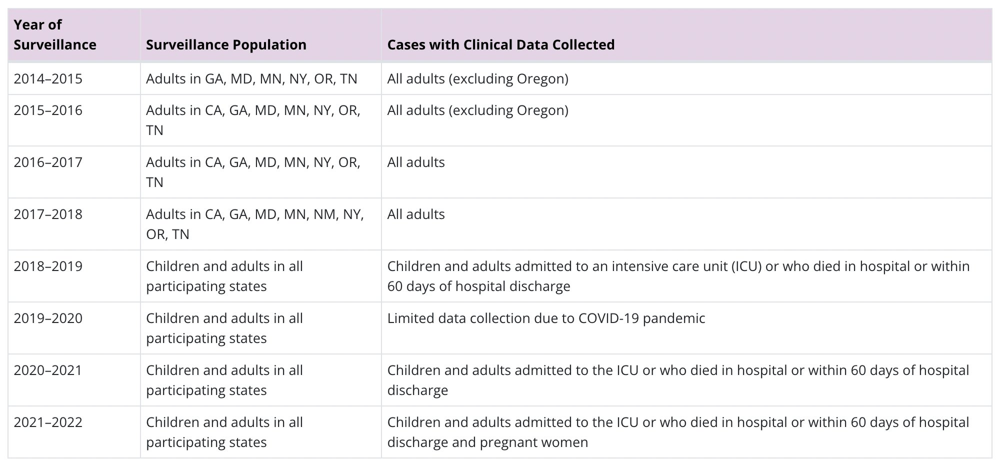
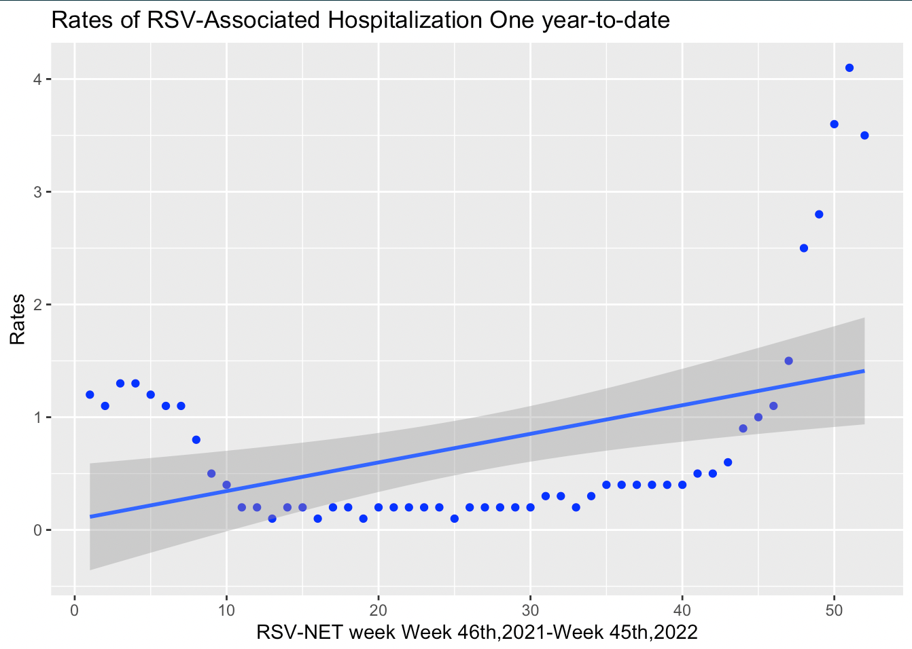
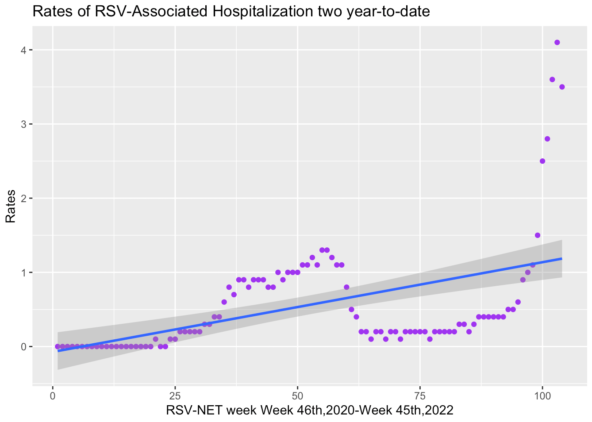

2 Methodology
2.1 Data Collection
The data set for this research is from **RSV Hospitalization Surveillance Network (RSV-NET)** (one of CDC research and surveillance platforms) ,which conducts population-based surveillance system for laboratory-confirmed COVID-19, RSV, and influenza-associated hospitalizations in the US among children younger than 18 years of age and adults.^\[8\]^
RSV-NET has been collecting RSV-associated hospitalizations in adults and children since 2018-2019 season from 58 counties in 12 states, including California, Colorado, Connecticut, Georgia, Maryland, Michigan, Minnesota, New Mexico, New York, Oregon, Tennessee, and Utah. Almost 9% of the U.S. population is covered and reported by the RSV-NET.
2.2 Why RSV-NET Data are Important
RSV-NET is a population-based surveillance system. Population-based surveillance is the active collection, analysis, and interpretation of data on a population in a specified geographic area. Tracking RSV-associated hospitalization rates helps public health professionals understand trends in virus circulation, estimate disease burden, and respond to outbreaks. Hospitalization rates show how many people in the surveillance area are hospitalized with RSV, compared to the total number of people residing in that area.
2.3 About this Dataset
Time frame: In season 2018-2019, 2019-2020, data collected is from October 1 to April 30. In season 2020-2021, 2021-2022, 2022-2023, data collected is from October 1 to October 1 next year.
A case is defined by laboratory-confirmed RSV in a person who Lives in a defined RSV-NET surveillance area AND Tests positive for RSV within 14 days before or during hospitalization. ^\[8\]^
Variables we selected from this dateset are:
MMWR Week: Represents week of that year. MMWR - Morbidity and Mortality Weekly Report, is prepared by the Centers for Disease Control and Prevention (CDC).
Rate: calculated as the number of residents in a surveillance area who are hospitalized with laboratory-confirmed RSV divided by the total population estimate for that area. [NCHS bridged-race population](https://www.cdc.gov/nchs/nvss/bridged_race.htm) estimates are used as denominators for rate calculations.
2.3.1 How an entry is made in dataset
A case is defined by laboratory-confirmed RSV in a person who:
Lives in a defined RSV-NET surveillance area AND
Tests positive for RSV within 14 days before or during hospitalization.
Evidence of RSV infection can be obtained through several laboratory tests:
Molecular assays, such as reverse transcription polymerase chain reaction (RT-PCR)
Commercially available rapid antigen detection tests
Serology tests, or antibody tests (must be paired acute and convalescent specimens)
Immunofluorescence antibody staining, including direct (DFA) and indirect (IFA) fluorescent antibody tests
Viral culture
2.3.2 Calculating Hospitalization Rates
To calculate RSV-associated hospitalization rates, RSV-NET collects the following data from identified cases:
Age
Sex
Race and ethnicity
County of residence
Date of hospital admission
Date of RSV test
Positive RSV test result
Hospitalization rates are calculated as the number of residents in a surveillance area who are hospitalized with laboratory-confirmed RSV divided by the total population estimate for that area. NCHS bridged-race population estimates are used as denominators for rate calculations.
The table below summarizes changes in surveillance populations and collection of clinical data by surveillance year. Because the surveillance areas and age groups included in surveillance have changed over time, trends should be interpreted with caution (see table below).

2.3.3 What’s in this Dataset?
Each row in the dataset is a laboratory confirmed RSV associated hospitalization. It has 8 columns which are described in below table
| Column Name | Description |
|---|---|
| State | Represents the state name from which data was collected. Entire state means all 9 states considered in this dataset. |
| MMWR Year | Represents Year |
| MMWR Week | Represents week of that year. MMWR - Morbidity and Mortality Weekly Report, is prepared by the Centers for Disease Control and Prevention (CDC). |
| Season | As the data is collected between October to April, this represents the duration of the year. |
| Age Category | Age limit |
| Sex | Male/Female |
| Race | Black, White, American Indian/Alaska Native and Asian/Pacific Islander people are categorized as non-Hispanic. Hispanic people could be of any race. If Hispanic ethnicity was unknown, non-Hispanic ethnicity was assumed. |
| Rate | Rates presented by race and ethnicity are calculated using records wit known race. Those with missing or unknown race are excluded from specific estimates but are included in overall esitmates. Hospitalization rates are based only on those who had positive test results for RSV through a test ordered by a health care professional not all people hospitalized with respiratory illness are tested for RSV |
Variables Considered:
Of the other available column values we have considered columns “MMWR Week” & “Rate” for our model. The data was last updated on 17th November 2022. We have considered two sets of data, one with last 12 months of YTD data and another one with 24 months of YTD data for our calculations.
2.4 Methods
2.4.1 Why Polynomial Regression?
In simple linear regression algorithm only works when the relationship between the data is linear, suppose if we have non-linear data then linear regression will not be capable to draw a best-fit line and it fails in such conditions. Consider the below diagram which has a non-linear relationship and you can see the Linear regression results on it, which does not perform well and doesn’t come close to reality. Hence, we introduce polynomial regression to overcome this problem, which helps identify the curvilinear relationship between independent and dependent variables.
One Year-to-date Data:

Two Year-to-date Data:

2.4.2 How Polynomial Regression Overcomes the problem of Non-Linear data?
Polynomial regression is a form of Linear regression where only due to the Non-linear relationship between dependent and independent variables we add some polynomial terms to linear regression to convert it into Polynomial regression.
Suppose we have X as Independent data and Y as dependent data. Before feeding data to a mode in preprocessing stage we convert the input variables into polynomial terms using some degree.
Consider an example my input value is 35 and the degree of a polynomial is 2 so I will find 35 power 0, 35 power 1, and 35 power 2 And this helps to interpret the non-linear relationship in data.
The equation of polynomial becomes something like this.[9]
y = 𝛽0 + 𝛽1x1 + 𝛽2x12 + … + 𝛽nx1n
The degree of order which to use is a Hyper-parameter, and we need to choose it wisely. But using a high degree of polynomial tries to over-fit the data and for smaller values of degree, the model tries to under-fit so we need to find the optimum value of a degree.
If you see the equation of polynomial regression carefully, then we can see that we are trying to estimate the relationship between coefficients and y. And the values of x and y are already given to us, only we need to determine coefficients and the degree of coefficient here is 1 only, and degree one represents simple linear regression Hence, Polynomial regression is also known as polynomial Linear regression.
Polynomial Regression is a form of Linear regression known as a special case of Multiple linear regression which estimates the relationship as an nth degree polynomial. Polynomial Regression is sensitive to Outliers so the presence of one or two Outliers can also badly affect the performance.